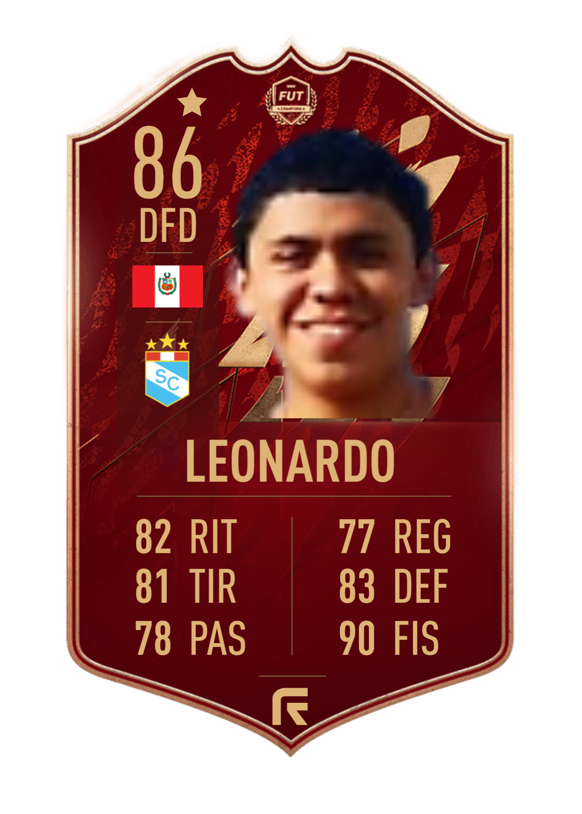
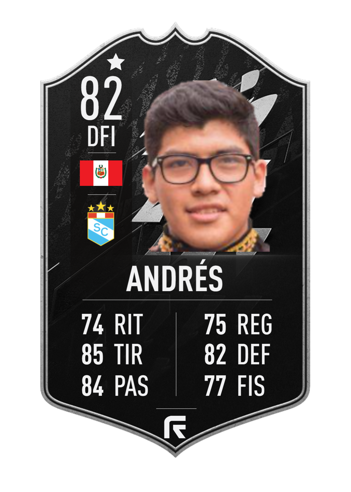
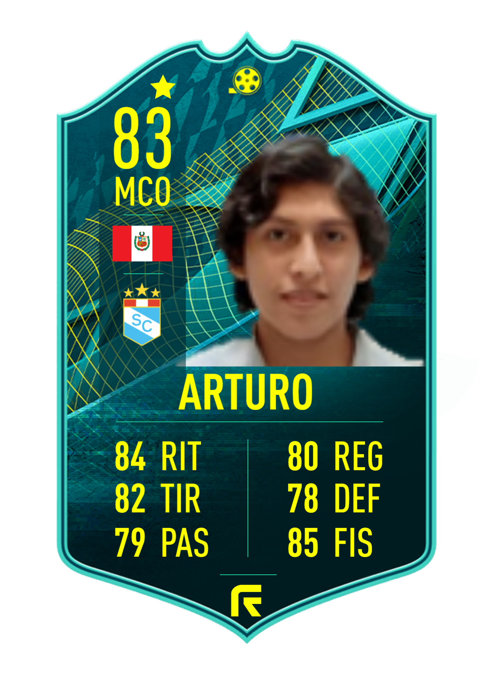
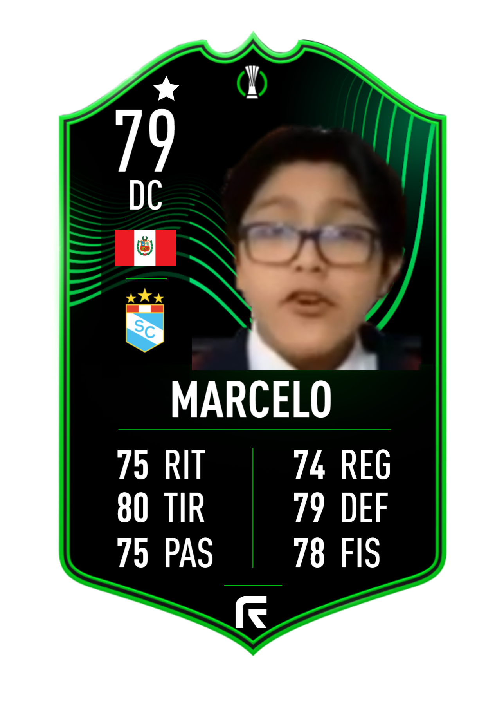
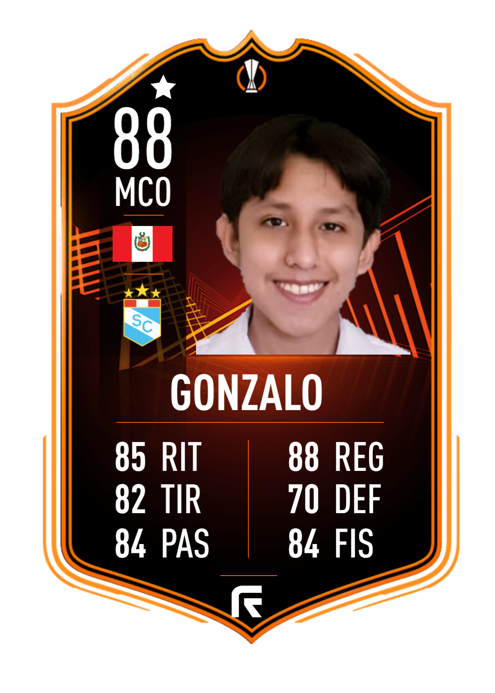
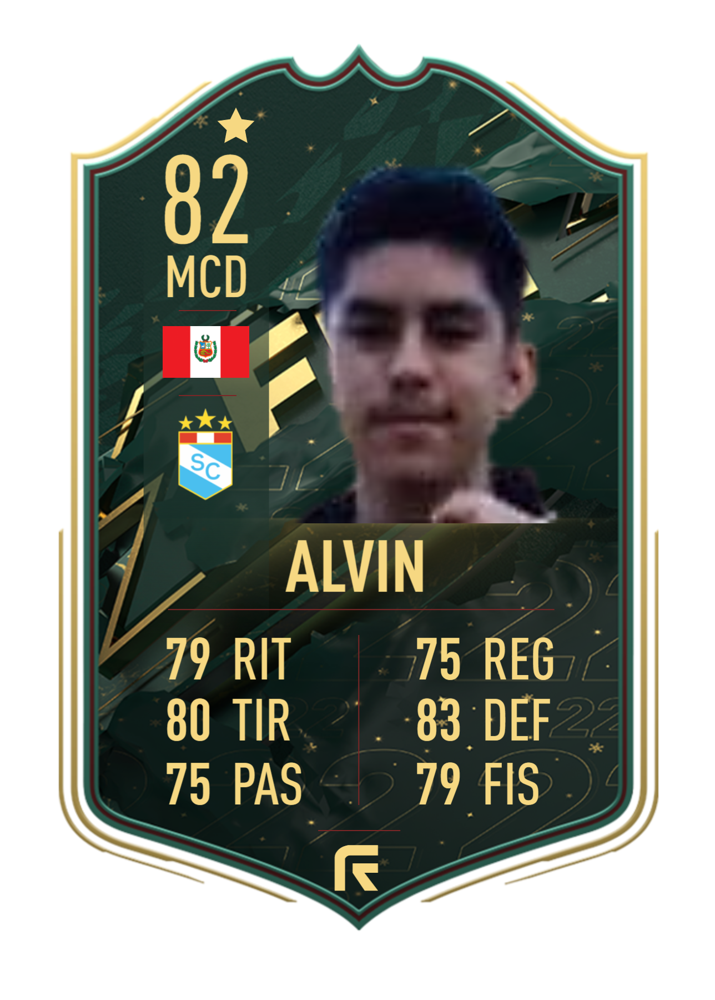
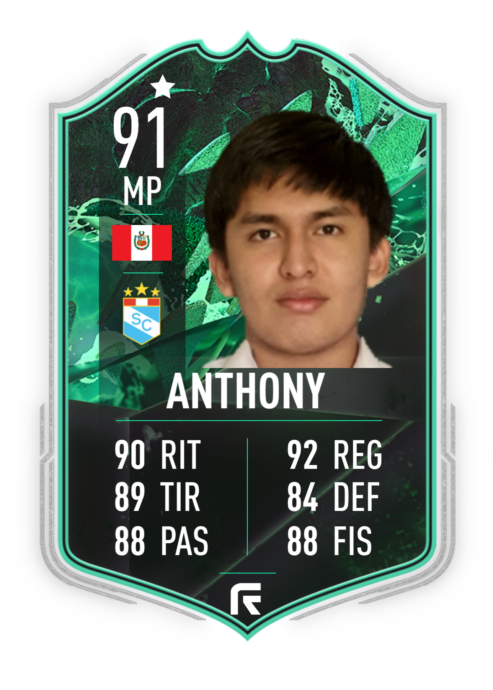

| Jugador |
Atributos |
Descripción |
 |
Kevin Esteban
Edad: 31 años
Posición: Portero
Dorsal: 1
|
Nuestro cicleador está preparado para mantener la valla en cero, apodado el Kyaro. |
|  |
Leonardo Banda
Edad: 19 años
Posición: Cierre
Dorsal: 3
|
Nuestro tirador mete terror y pavor en las bandas con su despliegue y aceleración. |
|  |
Andrés Esteban
Edad: 20 años
Posición: Cierre
Dorsal: 5
|
Nuestro DJ Drew tiene toda la experiencia y actitud para aportar al equipo, no hay quién rompa su muralla. |
|  |
Arturo Churampi
Edad: 16 años
Posición: Alero
Dorsal: 7 |
Nuestro Benavente esta listo para demostrar que también sabe tocar pelota. |
|  |
Marcelo Lopez
Edad: 13 años
Posición: Punta
Dorsal: 9 |
Nuestro 9 elegido en llenar el arco de goles, el terror del área esta listo con toda su jerarquía. |
|  |
Gonzalo Churampi
Edad: 14 años
Posición: Alero
Dorsal: 10 |
Nuestro arrasador es el indicado para romper caderas, es el 10 de la loza. |
|  |
Alvin Churampi
Edad: 15 años
Posición: Cierre
Dorsal: 12 |
Nuestro cierre fijo, encargado de recuperar balones, apodado el Tapie. |
|  |
Andrés Churampi
Edad: 18 años
Posición: Media punta
Dorsal: 14 |
Nuestro capitán ha sido el elegido para guiar a estos muchachos y combatir cada partido hasta el último aliento. |